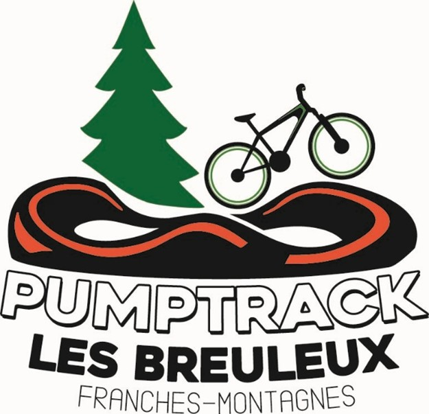

Camp de vélo en toscane 2026

plus...
BFM Tour des Sommêtres
championnats AIJC U11 – U19
Résultats 2025 :
École de cyclisme

L'école de cyclisme du VCFM s'adresse aux jeunes de 6 à 12 ans. Elle se veut complémentaire à la structure pour jeunes de 11 à 16 ans déjà en place au sein du Team Humard Vélo Passion.
Les cours sont dispensés chaque mercredi pendant la belle saison. Les jeunes sont encadrés par des moniteurs du Vélo-Club Franches-Montagnes au bénéfice d'une formation J&S ainsi que par des aides formés par ces derniers.
plus...PROJET DE CREATION D’UN PUMPTRACK AUX BREULEUX
 Chers amis, Par la création d'un pumptrack aux Breuleux, nous souhaitons apporter à notre région un espace ludique et sportif qui permettra à nos jeunes et moins jeunes de s'amuser, de se dépenser et de repousser leurs limites. Un pumptrack, c'est bien plus qu'un simple circuit ! C'est un lieu de rassemblement, un espace d'échanges et surtout un outil pour encourager l'activité physique par la mobilité douce. C’est également un moyen pour renforcer la confiance en soi et développer des compétences techniques à vélo, trottinette, skate, roller draisienne ou encore en chaise roulante. Tout le monde y trouvera son compte ! Nous sommes convaincus que ce projet contribuera à dynamiser notre communauté, en offrant à la jeunesse un lieu qui répond à ses besoins et à ses envies. C'est aussi une belle opportunité de promouvoir des valeurs de respect et d'entraide. Avec un budget d’environ 280'000 CHF, nous vous invitons à nous rejoindre dans cette belle aventure. Ensemble, donnons à notre jeunesse un lieu où elle pourra s'épanouir et s'exprimer. Merci pour votre soutien ! Le ComitéTrophée du doubs 2025
25 juin 2025: Biaufond – Les Bois
02 juillet 2025: La Goule – Le Noirmont
09 juillet 2025: La Verte Herbe – Saignelégier
16 juillet 2025: St-Ursanne-Saint-Brais
23 juillet 2025: Soubey – Saignelégier